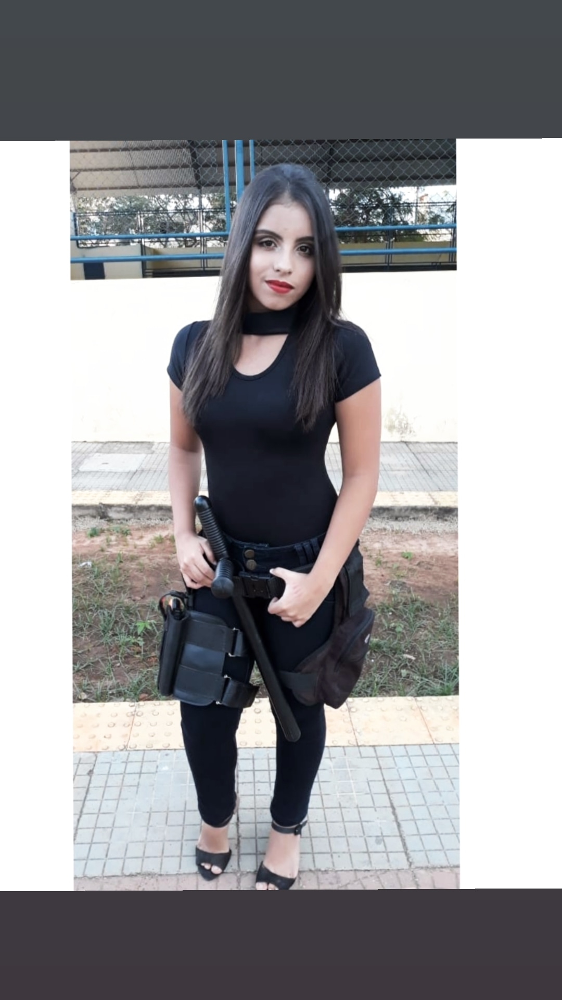

Meu blog
Redes Socias
 Instagram
Instagram
Biografia
Olá, bem vindos ao meu blog!
Contarei um pouco da minha história e a trajetória de minha vida até os dias atuais.
Me chamo Ana Karollyne da Silva Gomes, mas precisamente Karol. Nasci e me criei no nordeste, sou micaelense, tenho 15 anos e sou filha de Francisca Célida e Miguel Gomes. Com 4 anos eu tive que ir as pressas para a capital, pois meus pais descobriram que eu tinha pneomunia e dengue hemorragica. Os médicos aconselharam ir pra lá, pois em minha cidade não tinha recursos muito bons. Chegando lá, fui encaminhada para o hospital Maria Alice e lá fiquei por 10 dias. Conforme o passar dos dias, fui melhorarando e logo tive alta.

Minha mãe e Meu Pai
O tempo passou e eu encontrei muitas pessoas pelo caminho,tais me mostraram não serem verdadeiras, me decepicionaram e me fizeram desacreditar delas. No começo de 2016, fiz novas amizades que vieram pra somar na minha vida, e até hoje estão comigo. Minhas amigas são uma das coisas mais importantes pra mim, pois quando eu sempre precisei elas estavam lá a posto pra me ajudar.
Um dos meus maiores sonhos e seguir a carreira da policia. Poder servir o pais, zelar pela segurança da população, ajudar pessoas que necessitam, e prender pessoas que fazem mal a sociedade. Ano passado realizei uma parte desse sonho e me vesti de policial. Foi um dos melhores dias da minha vida!

Para conseguir meu sonho, tenho que estudar muito. Então procurei uma escola que me desse um suporte adequado, a EEEP Maria Célia Pinheiro Falcão. Muitas pessoas já saem preparadas daqui, achei uma boa oportunidade e investi.
Enfim, só tenho a agradecer a Deus por tudo e por ter chegado até aqui. Batalho muito pra conseguir o que eu quero, e espero alcançar tudo que almejo.Espero que tenha dado pra me conhecer um pouco e que tenham gostado!
2019